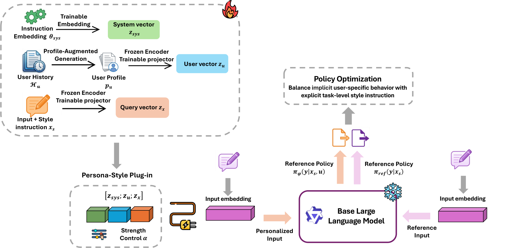
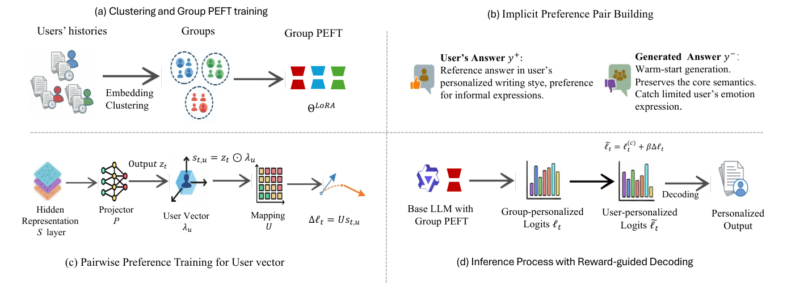
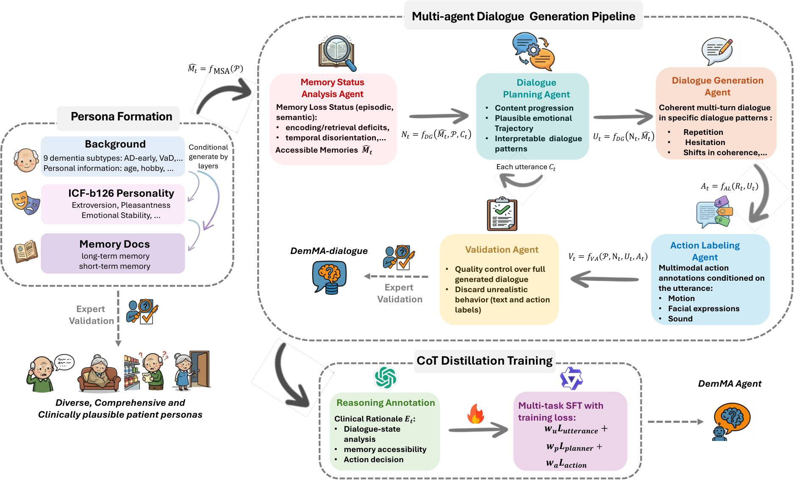
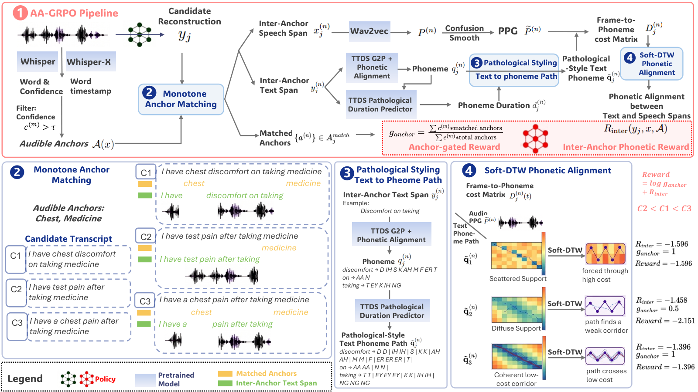

Hi, I’m Jiang Wu
I am interested in personalization, self-evolving agents, and recursive self-improvement (RSI), particularly how models can use feedback and experience to improve their behavior. I currently focus on agent memory: comparing repeated attempts at a task, separating grounded episodic evidence from transferable strategies, and checking when a stored lesson applies to a new problem.
I have been working on LLM post-training, reinforcement learning (RL), and personalized large language models, including preference optimization, lightweight adaptation, and preference-guided decoding. My RL work explores how to train multi-turn agents with turn-level feedback, trajectory-level rewards, and safety constraints. I also study how to learn from user feedback while keeping individual preferences distinct from explicit task and style instructions, so that personalization remains efficient and controllable.
I graduated from the University of Southern California in 2020.
Recent Selected Publications
2026


T²-GRPO: Turn–Trajectory Group Relative Policy Optimization for Caregiver Agents
A reinforcement learning framework for multi-turn caregiver agents that combines simulator-derived turn-level rewards with trajectory-level care goals. Centered-rank advantage normalization and a hard safety veto guide policy optimization without an additional LLM judge at every turn.
Other
- I find inspiration in classical Chinese poetry. My favorite poem is 青玉案·元夕（東風夜放花千樹）.
- I enjoy swimming and am currently reading The Razor's Edge by W. Somerset Maugham.